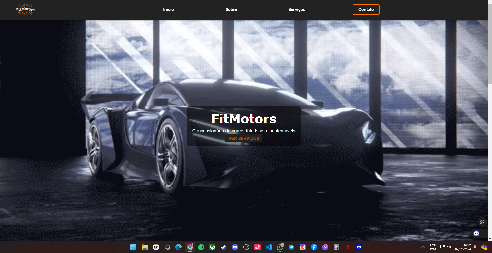
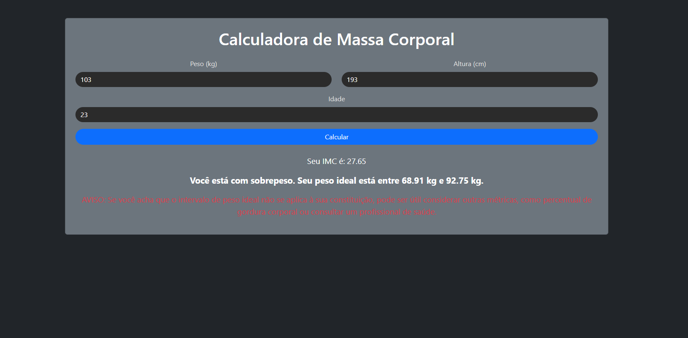
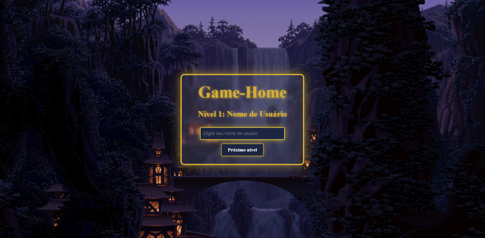

Bruno Pedroso
Sobre Mim
Sou apaixonado por tecnologia e iniciei minha jornada profissional na área de suporte técnico, onde adquiri uma base sólida em resolução de problemas e atendimento ao usuário. Agora, estou me aproximando da programação, explorando novas oportunidades e me desafiando a aprender e criar soluções inovadoras no mundo do desenvolvimento de software e web. Essa transição reflete minha constante busca por crescimento e adaptação às mudanças tecnológicas.
Habilidades
-  HTML5
-  CSS3
-  JavaScript
-  Python
Meus Projetos
FitMotors Concessionária
Criei esse Projeto utilizando HTML, CSS, JavaScript e I.ASite para acesso: CLIQUE AQUI 
Calculadora de Indice de Massa Corporal
Criei esse Projeto utilizando HTML, CSS e JavaScriptSite para acesso: CLIQUE AQUI 
Game-Home
Criei esse Projeto no intuíto de usar em algum jogo, ele seria o site onde o jogador cria a sua conta e logo após loga dentro do jogo.Neste projeto utilizei as tecnologias Front-end: HTML5, CSS3, JavaScript.
E para Back-end: PHP
Site para acesso: CLIQUE AQUI 
Contato
Email: brn.pedrosoinformatica@gmail.com
Telefone: (11) 97086-6917
Baixar Currículo